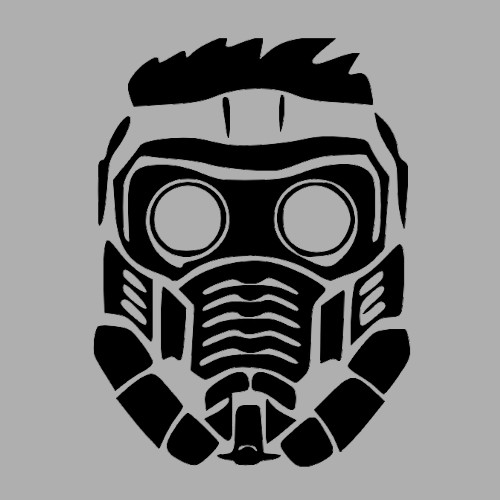
Star-Lord (Peter Quill) (Terre-616)
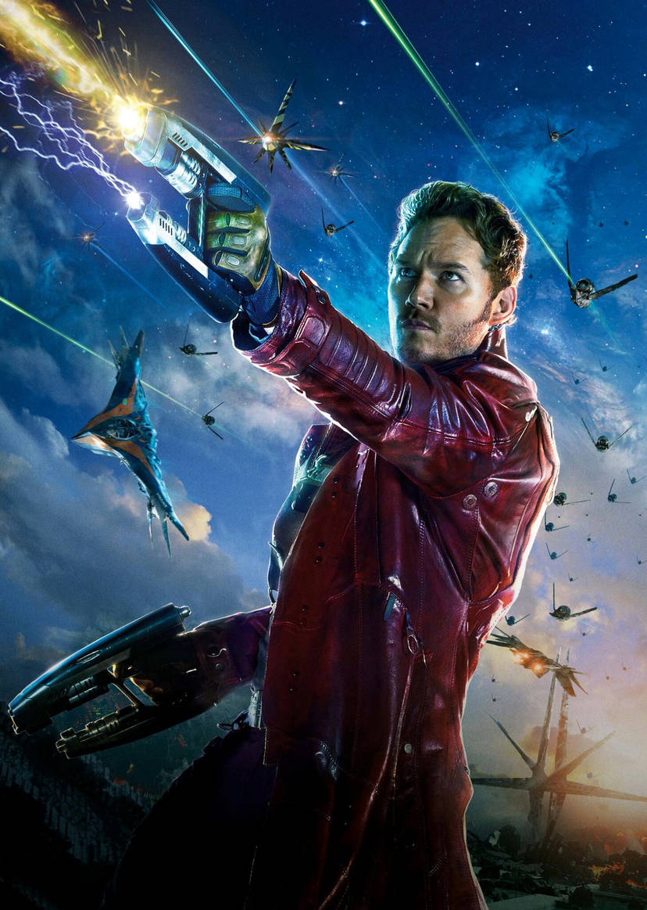
Origines :
L'enfance de Peter est très peu connue.
On sait qu'il est né sur Terre, dans le Colorado, d'une terrienne nommée Meredith et d'un alien-humanoïde originaire de la planète Spartax, J'son, dont le vaisseau s'était écrasé sur Terre.
Un an après son arrivée, J'son doit repartir mais promet de revenir une fois la guerre terminée, tout en sachant que Meredith attendait un enfant de lui.
Moins d'un mois plus tard, elle accouchera de Peter et l’élèvera jusqu'à ses 11 ans.
Un jour, alors qu'il faisait la vaisselle, deux extraterrestres de la race des Badoons firent irruptions chez lui, hurlant qu'ils venaient anéantir la lignée Spartax.
Ils tirèrent sur Meredith, la tuant sur le coup.
Peter s'empara d'un fusil à pompe et abattit les deux aliens.
Il découvrit ensuite le pistolet élémentaire de son père caché dans un placard, en s'enfuit de la maison juste avant que le vaisseau Badoon ne la détruise.
Il se réveilla à l’hôpital deux jours plus tard, où les infirmières l'informèrent que l'incident avait été attribué à une fuite de gaz.
Il fut placé en orphelinat, où il eut beaucoup de mal à s'adapter et trouver une famille d'accueil.
Cependant, il ne perdit pas de vue son désir de devenir astronaute, de quitter la Terre et de tuer les extraterrestres qui avaient tué sa mère.
A 18 ans, Peter obtint un poste de mécanicien au centre de lancement de la NASA en Californie.
Sur place, il s'entraîna en secret sur simulateur durant tout son temps libre, jusqu'à une altercation avec un astronaute important, qui lui valut un renvoi du centre.
Ne voulant pas manquer sa chance, il déroba un vaisseau Kree entreposé dans un hangar depuis la guerre Kree-Skrull, et parvint à quitter la Terre.
Peu après son départ, le vaisseau tomba en panne.
Il resta bloqué en orbite pendant trois jours avant d'être découvert par les Ravageurs, un équipage pirate commandé par Yondu Udonta.
Lorsque Yondu apprit que Peter était comme lui, un enfant sans foyer, il l'autorisa à rester à bord avec son équipage en tant que garçon de ménage.
Yondu apprit de Peter que la NASA utilisait des moteurs à distorsion Kree et exigea qu'il l'aide à les voler.
Après lui avoir promis de lui donner une gemme contenant l'emplacement du vaisseau Badoon qui avait tué sa mère, Peter accepta.
Mais réalisant que ce n'est pas ce qu'aurait souhaité sa mère, Peter revint libérer l'équipage pris en otage et expulsa Yondu.
Il renonça ensuite à toute vengeance et partit à la recherche de son destin parmi les étoiles, en tant que « Star-Lord ».
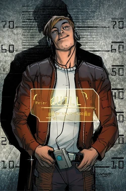
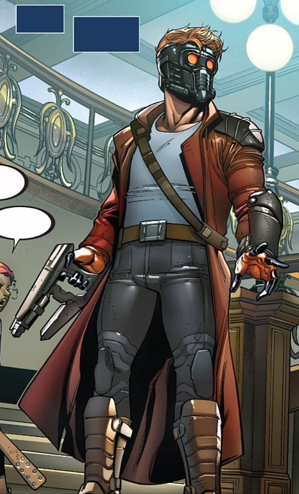
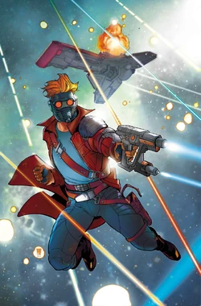
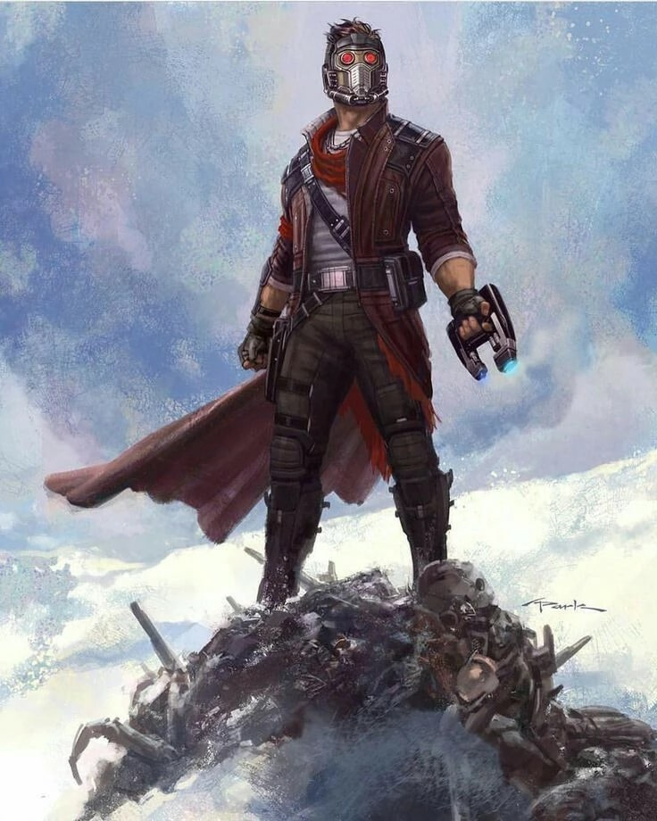
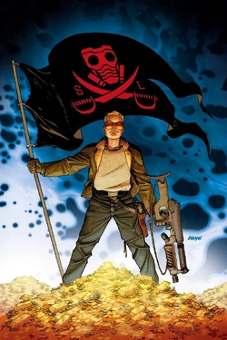
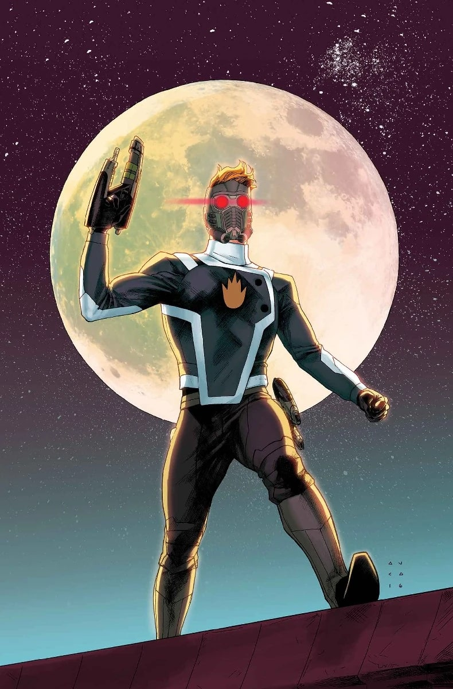
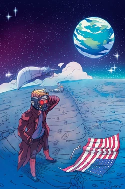
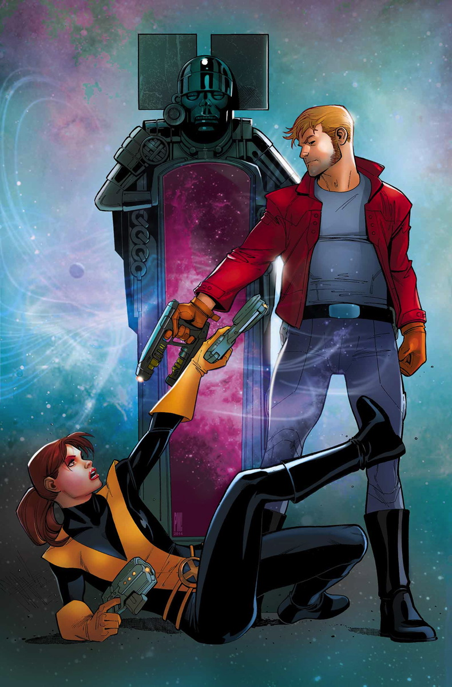
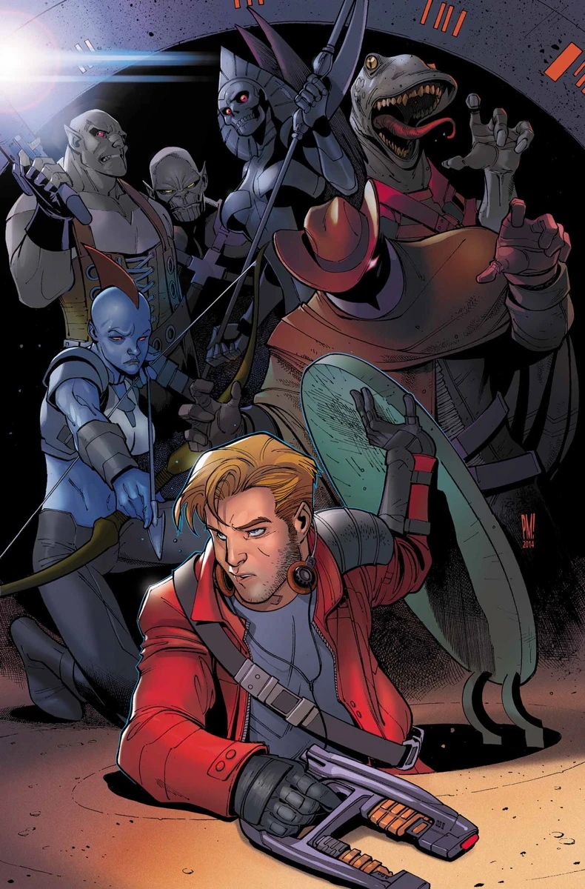
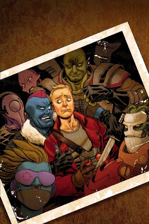
Personnalité :
Peter Quill est un aventurier de l'espace, audacieux, rusé et souvent sarcastique.
Il a un tempérament rebelle, et n'aime pas qu'on lui dicte sa conduite.
Son sens de la liberté est fort, ce qui le pousse à souvent enfreindre les règles où désobéir aux autorités.
Malgré ses airs désinvoltes, c'est un tacticien compétent et un pilote exceptionnel.
Il est souvent qualifié de bon leader par les membres des Gardiens de la Galaxie, même si son style est souvent chaotique.
Il utilise souvent l'humour et le sarcasme comme bouclier émotionnel, mais derrière cette façade se cache un homme marqué par un passé difficile sur Terre.
Capacités :
Star-Lord ne possède pas vraiment de super-pouvoirs, malgré que son héritage Spartax lui octroie une force et une endurance légèrement supérieure à la moyenne humaine.
Il possède également (selon les versions) une espérance de vie prolongée.
Son équipement en revanche est ce qui fait vraiment sa puissance.
Son casque de Star-Lord lui fournit de l'oxygène qui lui permet de survivre dans le vide spatial, et possède un système de communication universel.
Ses pistolets, les « Elements Guns » qu'il tient de son père, sont capables de tirer des projectiles composés des quatre éléments fondamentaux : l'eau, le feu, l'air et la terre.
Ils sont alimentés par l'énergie mentale de Peter.
Ses bottes sont équipées de jetpack lui permettant de voler sur de courtes distances.

Costume :
La première version du costume de Star-Lord dans les comics lui donnait un look de policier stellaire.
Il était composé d'une combinaison de vol spatial avec un aspect militaire, un casque large et doré avec une visière rouge, des gants et des bottes dorés et une étoile dorée sur la poitrine.
La version la plus connue est composée d'un blouson long rouge foncé, renforcé d'une armure légère sur le torse et les épaules.
Son casque est intégral avec un design plutôt techno-mécanique, des yeux lumineux rouges, et peut se rétracter ou s'activer instantanément autour de sa tête.
Ses Element Guns sont accrochés à sa ceinture ou dans dans holsters latéraux, et ses bottes sont équipées de jetpacks, lui permettant de voler ou de se déplacer dans l'espace.
Les principaux ennemis de Star-Lord

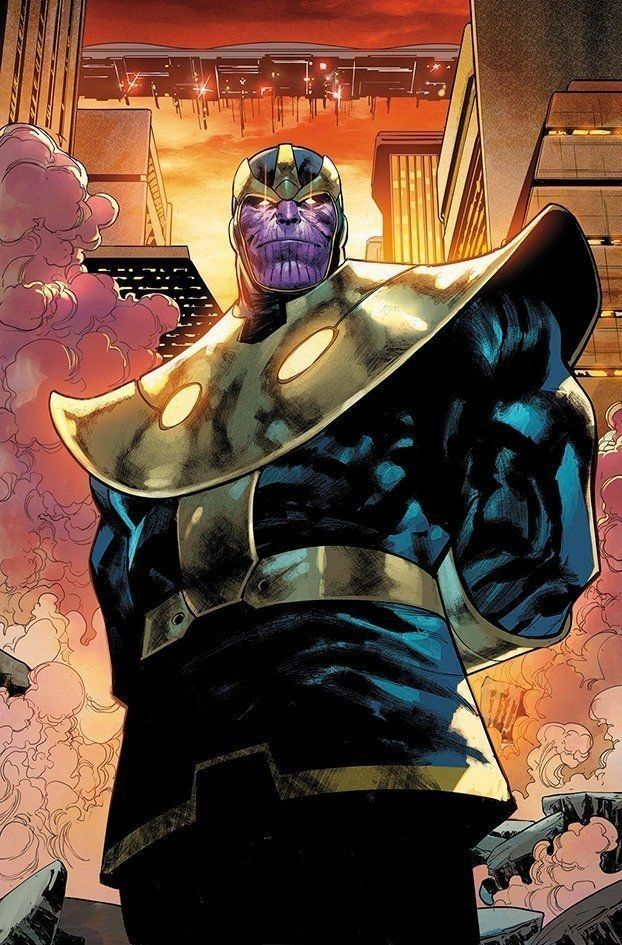
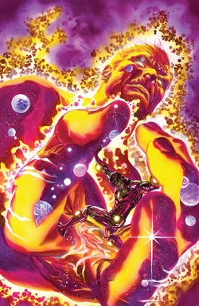

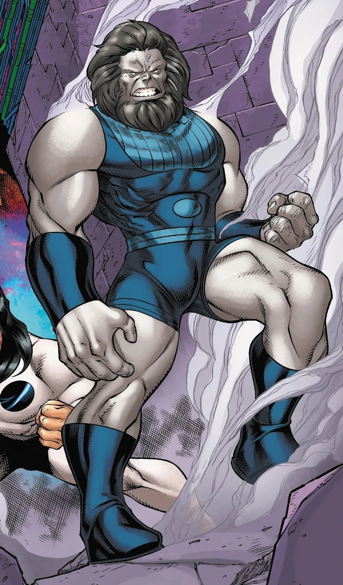


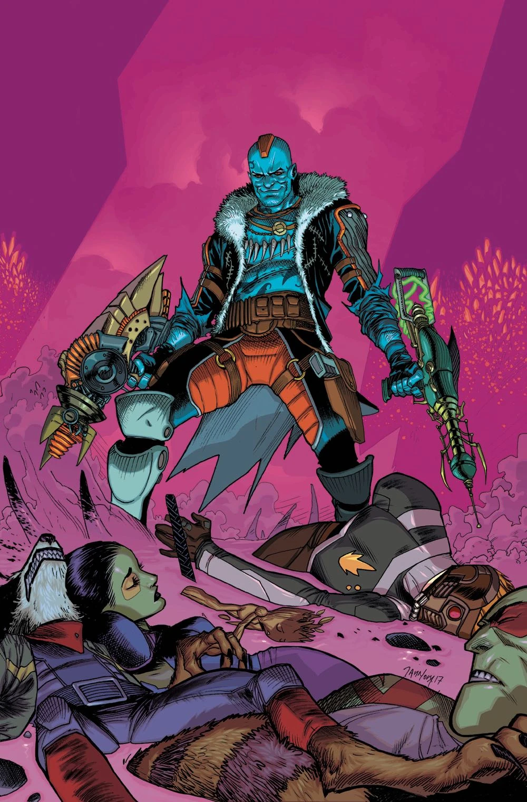
Équipes affiliées